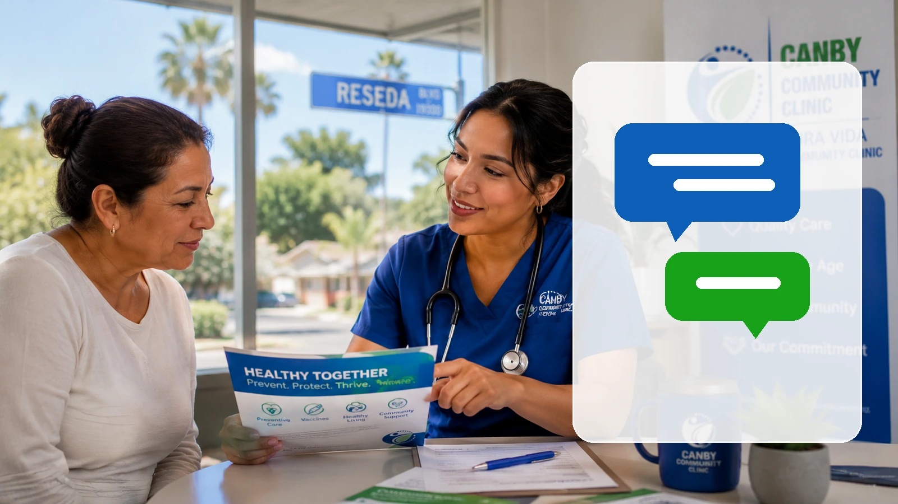
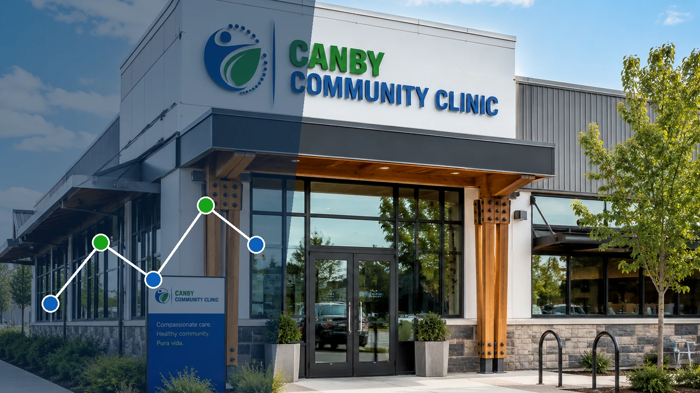

01
Appointment Guide
What to bring, what to ask, and how to leave with a clear follow-up plan.
Prepare for Your VisitUse these guides to prepare, understand privacy and patient rights, find clinic information, and read evidence-linked health education written for practical decisions.
Choose a topic and the page will point you to the most useful next step.
Bring an accurate medication list, relevant records, identification if requested, and the questions you want answered.
Open the Appointment GuideEach page answers a different part of the care process without asking you to submit private medical information online.
What to bring, what to ask, and how to leave with a clear follow-up plan.
Prepare for Your VisitAddress, weekday schedule, directions, parking questions, and emergency information.
Open Location DetailsWebsite privacy, nondiscrimination, accessibility, and the clinic privacy-notice page.
Review Privacy InformationBuild a medication list that reflects what you actually take, including supplements and timing.
Read the Medication GuideEach article includes a clear medical-information notice, descriptive sources, an updated date, and internal links to relevant clinic resources.
How time, cost, transportation, language, and continuity combine to shape whether local care is truly usable.
Read the Reseda Access ArticleScreening is most useful when it finds meaningful risk early without turning every possibility into a test.
Read the Preventive Care Article
Technique, repetition, home readings, medication use, and follow-up determine what a measurement actually means.
Read the Blood Pressure ArticleWhat A1C and glucose tests measure, who should discuss screening, and why follow-up matters.
Read the Prediabetes Article
Why qualified interpretation, plain language, and teach-back are patient-safety tools—not customer-service extras.
Read the Language Access ArticleThe safest record reflects what a patient actually takes, including supplements, timing, and access barriers.
Read the Medication Safety Article
Prevention, testing, medication review, referrals, and follow-up become more useful when one place holds the timeline.
Read the Primary Care ArticleThis website is for public information. It is not monitored as an emergency line and does not provide a secure place to send diagnoses, test results, insurance numbers, or medical records.